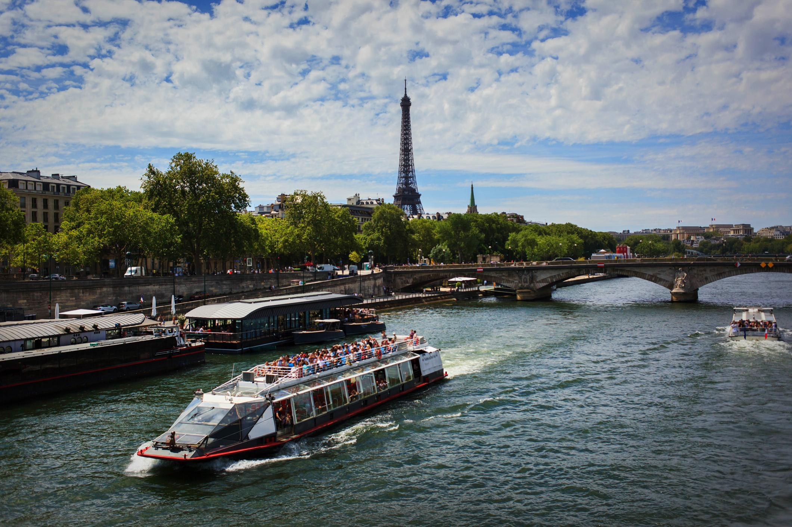
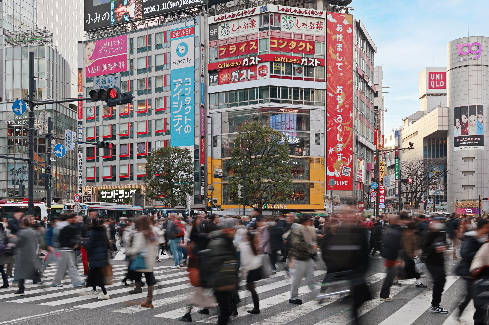

Paris

Paris is famous for romance, art, fashion, and beautiful landmarks. It is one of the most visited cities in the world and offers a unique mix of history and modern culture.
Discover amazing travel destinations and plan your next adventure. This website introduces some of the most popular places to visit around the world and provides useful information for people who love travel.

Paris is famous for romance, art, fashion, and beautiful landmarks. It is one of the most visited cities in the world and offers a unique mix of history and modern culture.
Rome is known for its rich history, ancient architecture, and delicious food. Visitors can enjoy famous attractions while learning about the city’s important past.

Tokyo is a vibrant city that combines traditional culture with modern technology. It is a great destination for people who want to experience both old and new Japan.
Travel helps people explore new cultures, meet different people, and enjoy new experiences. Visiting another country can be exciting, educational, and relaxing at the same time.
This website was created to help users learn about different travel destinations before planning a holiday. It gives simple and useful information about attractions, travel tips, prices, and the best times to visit.